How to Install and Use Podcasts
I know some of you might encounter some problems installing and using Podcasts, so I added pictures here to make it simpler.
-
Open the Google Playstore App.
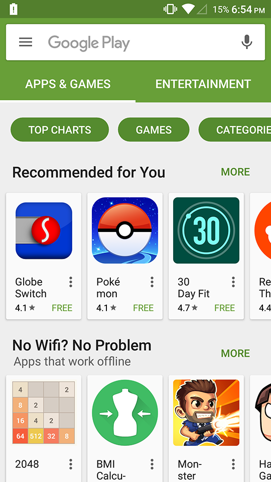
-
At the top is a white search bar; type "Podcast" and search.
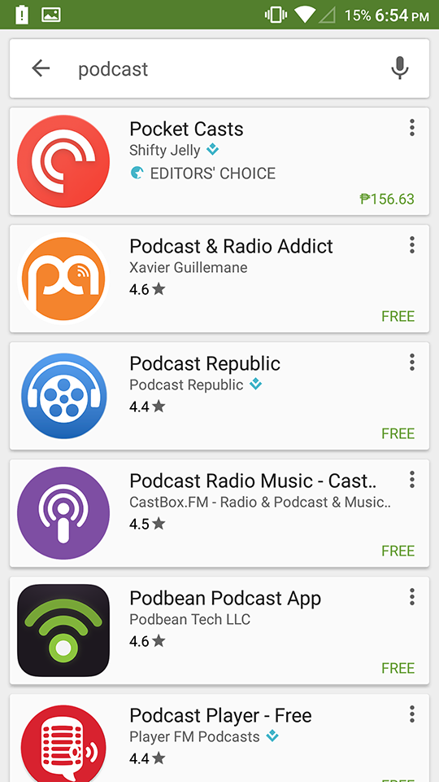
-
Download Podcast & Radio Addict, or you can choose whatever Podcast player to use. Think of it like a music player, but you can download music.
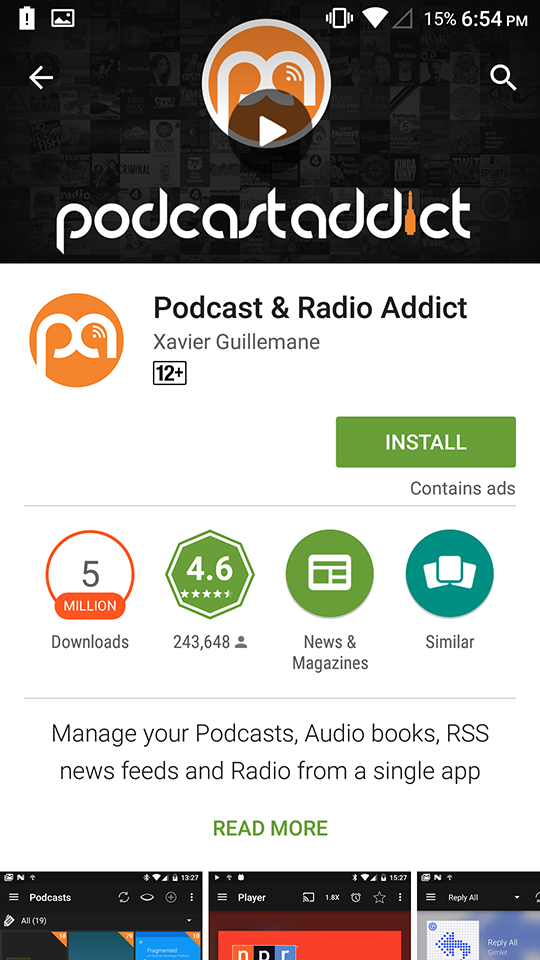
-
Once downloaded, Allow any permissions required for the Podcast & Radio Addict. It will ask for permissions to access your files so that it can save the Podcasts in your phone.
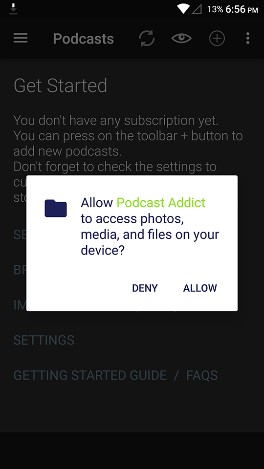
-
When you open the app, you can read some explanation of how to begin using Podcasts.
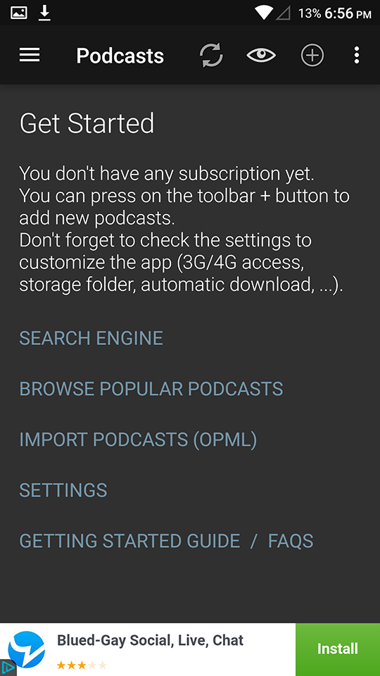
-
Search whatever topic you're interested in (i.e. Computer Science).
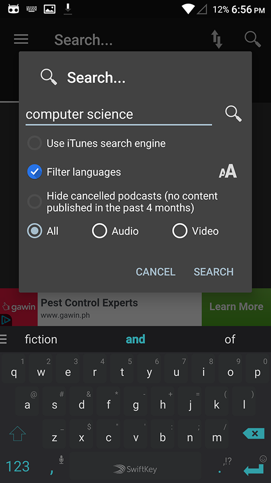
-
Look at all the search results and find something you want to try out.
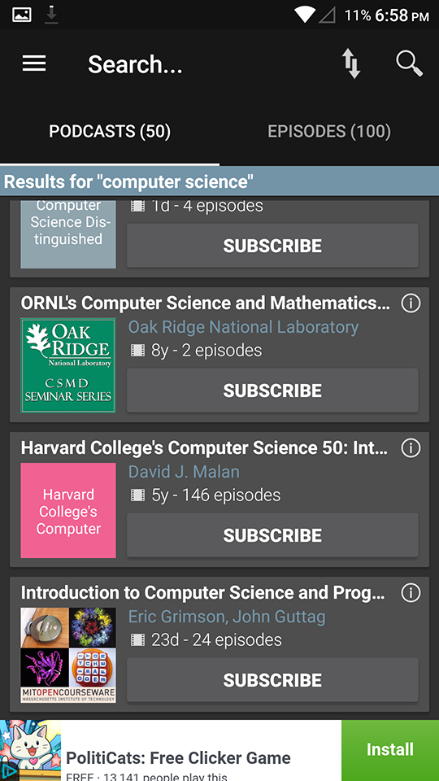
-
Once you've selected what to try, subscribe to the Podcast you selected. That way you'll know when they publish new episodes.
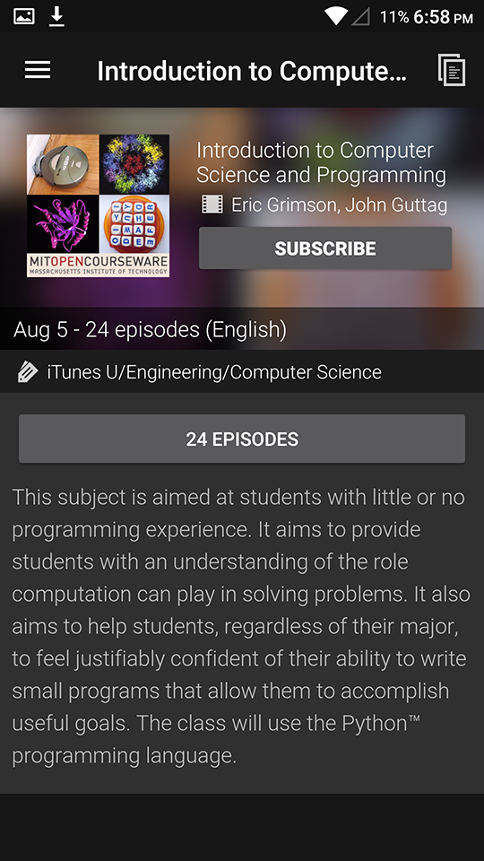
-
Pick one of the earliest episodes to begin studying (It should be at the bottom of the list)!
-
There's three vertical dots on the side of the episode. Tap it to opens up the options.
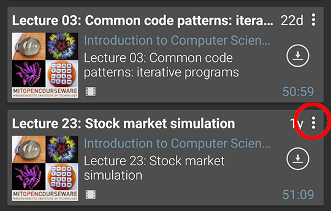
- Download the episode to listen to it even offline!
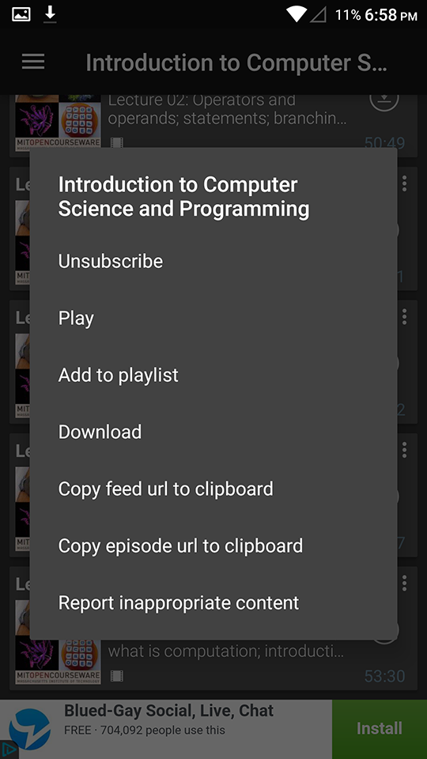
This is what it looks like when it's dowloading.
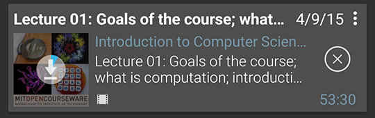
-
Once you're done downloading and listening to the episode, remember to delete the episode so you don't run out of space on your phone!
Ask a question
Return to Main Page